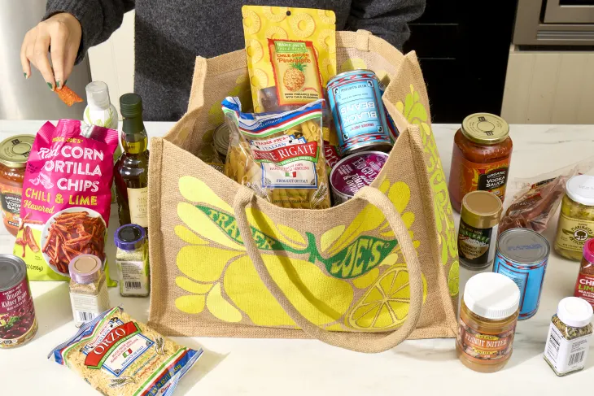
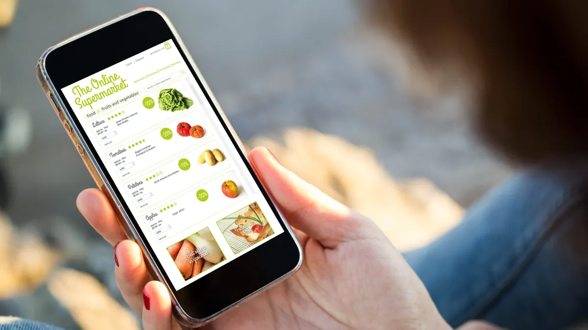
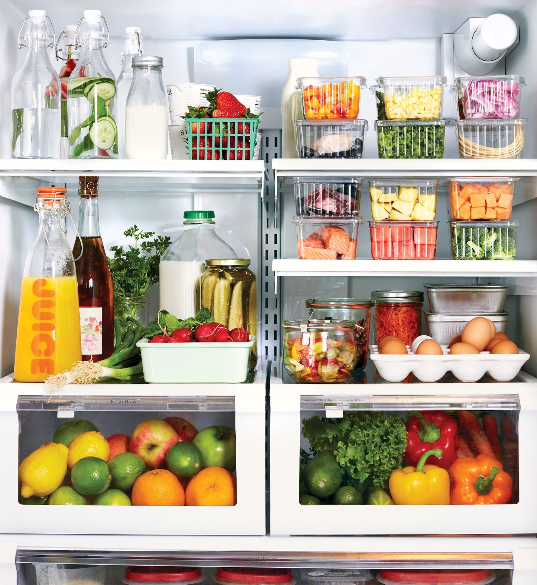

About FreshTrack
FreshTrack is an idea for an app that helps people remember what groceries they have at home and when those groceries expire.
I came up with the idea because food can easily get pushed to the back of the fridge or pantry and be forgotten. FreshTrack would give users a simple place to check what they already have.
The main goal is to help people use groceries before they expire and reduce food waste.
Features
I focused on a few features that would be useful for keeping track of food at home. One of the main features would be expiration reminders.
Add Groceries
Users could add groceries manually or scan a barcode after shopping.
Expiration Reminders
FreshTrack could remind users when food is getting close to its expiration date.
Organize Food
Groceries could be separated into categories so they are easier to find.
Check What You Have
Users could look through their list before buying more groceries.
How It Works
A user could start by adding the groceries they bought and entering the expiration dates.
- Open FreshTrack.
- Add a grocery item.
- Enter the expiration date.
- Save the item to the list.
- Check which foods need to be used soon.
- Remove an item after using it.
Why Use FreshTrack?
Waste Less Food
Seeing expiration dates in one place could make it easier to remember which foods should be used first.
Spend Less on Groceries
Using more of the groceries that were already purchased could mean throwing away less food and wasting less money.
Stay Organized
Instead of trying to remember everything in the refrigerator and pantry, users could check their FreshTrack list.
More Information
The FDA website has more information about food safety at home.
The EPA website also has information about reducing wasted food.
Gallery
These images show some of the ideas behind FreshTrack.



Try the Page
Use the buttons below to change a few things on the page.